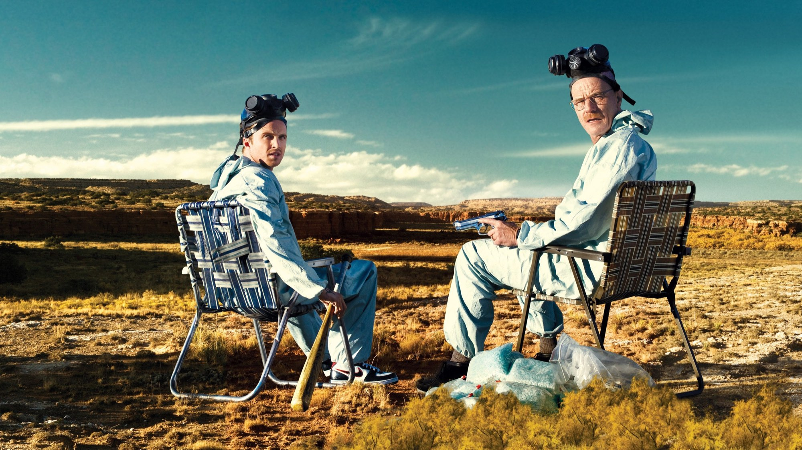
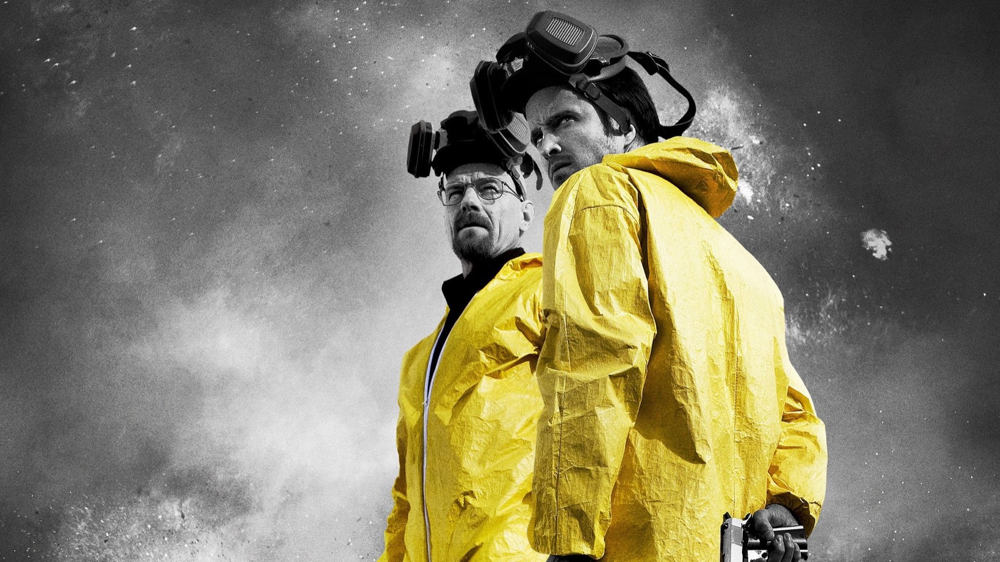
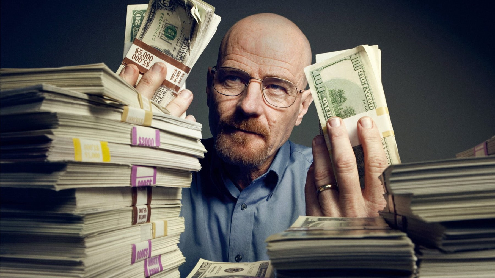

Jesse Pinkman doveva morire nella prima stagione
Il socio di Walter White doveva uscire di scena presto, poi Gilligan vide Aaron Paul e cambiò i piani
Il socio più nervoso e più umano di Walter White aveva una scadenza. Gli autori lo avevano pensato per sparire presto, ma poi accadde una cosa che nessun piano prevede, e la serie cambiò strada.
Un personaggio nato per uscire di scena
Nei progetti iniziali Jesse moriva alla fine della prima stagione. Vince Gilligan, che ideò la serie e ne guidava la scrittura, cambiò idea dopo aver visto in azione Aaron Paul. Pesò soprattutto l'intesa con Bryan Cranston, perciò il ragazzo diventò uno dei protagonisti. Per noi è la correzione di rotta più fortunata della televisione recente, perché senza Jesse Walter White resterebbe un uomo che parla da solo. Con lui, invece, ogni scelta ha un testimone. Ha anche una coscienza.

Tre Emmy per un ruolo da non protagonista
Jesse apparve per la prima volta nel Pilot, andato in onda il 20 gennaio 2008. Paul lo interpretò fino alla fine e vinse tre Emmy come miglior attore non protagonista in una serie drammatica, tra il 2010 e il 2014. Il paradosso è tutto qui. La parte che nessuno voleva tenere in vita finì per essere premiata più di tutte le altre. Il riconoscimento non fu un caso, perché misura quanto quel «secondario» pesasse nella storia.
L'unico, con Walter, in ogni episodio
Un dato racconta bene la svolta. Jesse è l'unico personaggio, oltre a Walter, presente in tutti gli episodi. Tutti. All'inizio è uno spacciatore poco simpatico, ma episodio dopo episodio diventa la coscienza morale della serie, sempre più pentito di ciò che fa insieme al suo ex professore. Quindi rivedere il Pilot sapendolo dà un'altra luce a ogni scena, perché ogni sua battuta, per quanto sgradevole, anticipa ciò che verrà.
Saul e Hank nacquero diversi
Anche gli altri personaggi cambiarono strada mentre la serie prendeva forma. Bob Odenkirk trasse ispirazione per la voce di Saul Goodman dal produttore Robert Evans. All'inizio della serie, invece, Hank doveva essere il personaggio comico: chi lo conosce oggi stenta a crederlo. Una piccola lezione di scrittura. Gilligan non difese i piani a tutti i costi, ma ascoltò ciò che gli attori portavano sul set e, quando servì, cambiò idea.

Il corpo di Gus e i mini-episodi
Un altro dettaglio racconta quanto fosse curato il lavoro sui personaggi. Esposito, l'interprete di Gus, disse di aver portato il suo allenamento di yoga nella parte, per dare al personaggio una presenza fisica composta e controllata. Per noi è la prova che il carisma di un cattivo nasce da gesti piccoli, e non da urla. Nel febbraio 2009, però, AMC realizzò cinque mini-episodi disponibili online, un modo semplice per tenere vivo il pubblico tra una stagione e l'altra. La serie sapeva già come parlare a chi la guardava dal telefono.
Cranston voleva cambiare registro
Bryan Cranston disse di voler passare dalla commedia al dramma, e Walter White fu la sua risposta. Ma Walter da solo non basta. Serviva un contrappeso, e il contrappeso era proprio Jesse. Dunque il duo regge. Uno spinge verso il precipizio, mentre l'altro, con la sua rabbia e i suoi sensi di colpa, ricorda quanto costi.
Gli ascolti su Netflix e il titolo italiano
La serie ebbe ascolti modesti nelle prime tre stagioni, che crebbero dopo l'arrivo su Netflix prima della quarta. Oggi, in Italia, si trova ancora lì, quindi non servono abbonamenti strani. Da noi è nota anche come «Breaking Bad - Reazioni collaterali», e Jesse ha la voce di Francesco Pezzulli. Nel 2013 la Writers Guild of America collocò la serie al tredicesimo posto tra le meglio scritte di sempre. Se vi capita di ripartire dal Pilot, il nostro consiglio è guardare Jesse, perché è lui che trasforma una storia di crimine in una storia di conseguenze.
Ripartite dal primo episodio e guardate Jesse: nacque per morire presto e finì per diventare il cuore della serie. Secondo voi, senza di lui Breaking Bad sarebbe rimasta la stessa?
Domande frequenti
Jesse Pinkman doveva davvero morire nella prima stagione?
Sì, nei piani iniziali: Vince Gilligan cambiò idea dopo aver visto l'intesa tra Aaron Paul e Bryan Cranston.
Quanti Emmy ha vinto Aaron Paul per Breaking Bad?
Tre come miglior attore non protagonista in una serie drammatica, tra il 2010 e il 2014.
Chi doppia Jesse in italiano?
Francesco Pezzulli.
Dove si vede Breaking Bad in Italia?
Su Netflix, al momento della pubblicazione.